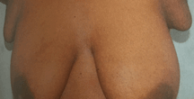

ಸ್ತನ

ಹೆಚ್ಚಿನ ಸ್ತನದ ಬದಲಾವಣೆಗಳು ಬೆನೈನ್ (ಕ್ಯಾನ್ಸರ್ ಅಲ್ಲದವು) ಆಗಿರುತ್ತವೆ. ಆದರೆ, ಬದಲಾವಣೆಯನ್ನು ಬೇಗನೇ ಪತ್ತೆ ಮಾಡುವುದು ಸ್ತನ ಕ್ಯಾನ್ಸರಿನ ರೋಗಪತ್ತೆಯ ಮೂಲಕ ಯಶಸ್ವಿ ಚಿಕಿತ್ಸೆಯ ಸಾಧ್ಯತೆಯನ್ನು ಹೆಚ್ಚಿಸುತ್ತದೆ, ಇದರಿಂದ ಸ್ತ್ರೀಯು ಬದುಕುಳಿಯುವ ಸಾಧ್ಯತೆ ಹೆಚ್ಚಾಗುತ್ತದೆ.
ಈ ಮಾಹಿತಿಯು ಪ್ರಾಥಮಿಕವಾಗಿ ಸ್ತ್ರೀಯರನ್ನು ಸಬಲರನ್ನಾಗಿಸುವ ಉದ್ದೇಶಕ್ಕಾಗಿಯೇ ಇದ್ದರೂ, ಪುರುಷರೂ ಕೂಡ ತಮ್ಮ ಸ್ತನದ ಅಂಗಾಂಶದಲ್ಲಿನ ಯಾವುದೇ ಬದಲಾವಣೆಗಳ ಬಗ್ಗೆ ತಿಳಿದಿರಬೇಕು. ಪುರುಷರಲ್ಲಿಯೂ ಸ್ತನ ಕ್ಯಾನ್ಸರ್ ಉಂಟಾಗುತ್ತದೆ ಎನ್ನುವುದು ಅನೇಕ ಜನರಿಗೆ ತಿಳಿದಿಲ್ಲ. ಸ್ವಲ್ಪ ಪ್ರಮಾಣದಲ್ಲಿ ಪುರುಷರೂ ಪ್ರತಿ ವರ್ಷ ಸ್ತನ ಕ್ಯಾನ್ಸರಿಗೆ ತುತ್ತಾಗುತ್ತಾರೆ (1% ಸ್ತನ ಕ್ಯಾನ್ಸರುಗಳು ಪುರುಷರಲ್ಲಿ ಉಂಟಾಗುತ್ತವೆ - ಅಂದರೆ 1/100).
ಸ್ತನ
ಹಾಲಿನ ಗ್ರಂಥಿಗಳು ಎಂದು ಕರೆಯಲ್ಪಡುವ ಸ್ತನಗಳು ಪ್ರಸವದ ನಂತರ ತಾಯಿಯಲ್ಲಿ ಉಂಟಾಗುವ ಹಾರ್ಮೋನ್ ಬದಲಾವಣೆಯನ್ನು ಅವಲಂಬಿಸಿ ಹಾಲನ್ನು ಉತ್ಪಾದಿಸುವ ಗ್ರಂಥಿಗಳನ್ನು ಒಳಗೊಂಡ ಅಂಗಗಳ ಜೊತೆ ಆಗಿವೆ. ಇವು ಮುಖ್ಯವಾಗಿ ಕೊಬ್ಬಿನ ಅಂಗಾಂಶವನ್ನು ಹೊಂದಿದ್ದು, ಎದೆಯ ಮೇಲೆ ಉಬ್ಬಿದಂತೆ ಇರುತ್ತವೆ ಮತ್ತು ಕಂಕುಳಿನ ಕೆಳಕ್ಕೆ ಹಾಗೂ ಸುತ್ತಲೂ ವಿಸ್ತರಣೆಯಾಗಿರುತ್ತವೆ. ಅವುಗಳು ಅಸ್ಥಿರಜ್ಜು ಮತ್ತು ದೊಡ್ಡ ಸ್ನಾಯುಗಳ ಬೆಂಬಲ ಹೊಂದಿರುತ್ತವೆ.
ಪ್ರತಿಯೊಂದು ಸ್ತನವೂ 15-20 ಜೋಲುಭಾಗಗಳನ್ನು ಹೊಂದಿದ್ದು ಅನೇಕ ಗ್ರಂಥಿಗಳು ಹಾಗೂ ನಾಳಗಳು ಕೊಬ್ಬಿನ ಹಾಗೂ ಸಹಾಯಕ ಅಂಗಾಂಶದಿಂದ ಸುತ್ತುವರಿದಿರುತ್ತವೆ (ನಕ್ಷೆ ನೋಡಿ). ಪ್ರತಿ ಗ್ರಂಥಿಯೂ ಮೊಲೆತೊಟ್ಟಿನತ್ತ ಮುಂದುವರಿದಿರುವ ಸುಮಾರು 30 ಮುಖ್ಯ ನಾಳಗಳನ್ನು ಹೊಂದಿದೆ. ಮೊಲೆತೊಟ್ಟಿನ ಸುತ್ತಲಿನ ಗಾಢವರ್ಣದ ಚರ್ಮವನ್ನು ವರ್ಣವಲಯ ಎನ್ನಲಾಗುತ್ತದೆ.
ಪ್ರತಿಯೊಂದು ಕಂಕುಳಿನಲ್ಲಿಯೂ 20-30 ದುಗ್ಧ ಗ್ರಂಥಿಗಳು ಇದ್ದು ಸ್ತನದಿಂದ ದ್ರವವನ್ನು ಹೊರಹಾಕುತ್ತವೆ. ಇವು ದುಗ್ಧಗ್ರಂಥಿಯ ಭಾಗಗಳಾಗಿದ್ದು ದೇಹವು ಸೋಂಕಿನ ವಿರುದ್ಧ ಹೋರಾಡುವುದಕ್ಕೆ ನೆರವಾಗುತ್ತವೆ. ಒಂದು ಸ್ತನವು ಮತ್ತೊಂದಕ್ಕಿಂತ ದೊಡ್ಡದಾಗಿರುವುದು ಮತ್ತು ನಿಖರವಾಗಿ ಸಹಜವಾಗಿರುವುದು ಸಾಮಾನ್ಯವಾಗಿರುತ್ತದೆ.
ಮೊಲೆತೊಟ್ಟು

ಸ್ತನಗಳು ಸಾಮಾನ್ಯವಾಗಿ ಮುಂದಕ್ಕೆ ಬಿಂದುವನ್ನು ಹೊಂದಿರುತ್ತವೆ, ಆದಾಗ್ಯೂ ಪ್ರತಿಯೊಂದು ಸ್ತನವೂ ಬೇರೆ ಬೇರೆಯಾಗಿ ಕಾಣಬಹುದು. ಒಂದು ಅಥವಾ ಎರಡೂ ಸ್ತನಗಳು ಒಳಕ್ಕೆ ತಿರುಗಿರುವುದು ಸಹಜವಾಗಿರುವುದಿಲ್ಲ (ಒಳಮುಖ). ಇದು ಹುಟ್ಟಿನಿಂದಲೇ ಇರಬಹುದು ಅಥವಾ ಸ್ತನದ ಬೆಳವಣಿಗೆಯಲ್ಲಿ ಉಂಟಾಗಿರಬಹುದು. ಸ್ತನಗಳು ಕೂದಲನ್ನು ಹೊಂದಿರುವುದಿಲ್ಲ, ಆದರೆ ಕೆಲವು ಸ್ತ್ರೀಯರಲ್ಲಿ ವರ್ಣವಲಯದ ಮೇಲೆ ಸ್ವಲ್ಪ ಕೂದಲಿರುತ್ತದೆ.
ಸ್ವಲ್ಪಮಟ್ಟಿನ ಸ್ತ್ರೀಯರು ಹೆಚ್ಚುವರಿ ಸ್ತನ ಅಥವಾ ಸ್ತನಗಳನ್ನು ಹೊಂದಿರಬಹುದು, ಇದನ್ನು ಆಕ್ಸೆಸರಿ ಸ್ತನಗಳು ಎನ್ನುತ್ತಾರೆ. ಸಾಮಾನ್ಯವಾಗಿ ಅವು ಕಂಕುಳಿನ ಕೆಳಭಾಗದಲ್ಲಿ ಇರುತ್ತವೆ. ಕೆಲವು ಹೆಣ್ಣುಮಕ್ಕಳು ಒಂದು ಹೆಚ್ಚುವರಿ ಮೊಲೆತೊಟ್ಟು ಅಥವಾ ಮೊಲೆತೊಟ್ಟುಗಳನ್ನು ಹೊಂದಿರುತ್ತಾರೆ. ಇವು ಸಾಮಾನ್ಯವಾಗಿ ಸ್ತನದ ಕೆಳಭಾಗದಲ್ಲಿ ಅಥವಾ ಹೊಕ್ಕುಳಿನ ಮೇಲ್ಭಾಗದಲ್ಲಿ ಇರುತ್ತವೆ. ಚಿಕ್ಕ ಸ್ತನಗಳು ಅಥವಾ ಹೆಚ್ಚುವರಿ ಮೊಲೆತೊಟ್ಟುಗಳು ಸಾಮಾನ್ಯವಾಗಿ ಸಮಸ್ಯೆಯಾಗಿರುವುದಿಲ್ಲ ಮತ್ತು ಅವನ್ನು ತೆಗೆಯುವುದು ಅಗತ್ಯ ಇರುವುದಿಲ್ಲ.
ಕಂಕುಳಿನಲ್ಲಿ ಚಿಕ್ಕ ಸ್ತನಗಳು

ಪ್ರೌಢಾವಸ್ಥೆಯಿಂದ ಆರಂಭಿಸಿ ಹದಿವಯಸ್ಸು, ಮಕ್ಕಳನ್ನು ಹೆರುವ ವಯಸ್ಸು ಮತ್ತು ನಂತರ ಋತುಚಕ್ರ ನಿಲ್ಲುವ ವೇಳೆ (ಜೀವನದ ಬದಲಾವಣೆ) ಯಲ್ಲಿ ಸತತವಾಗಿ ಬದಲಾಗುತ್ತಿದ್ದು, ಸ್ತ್ರೀ ಹಾರ್ಮೋನ್ ಈಸ್ಟ್ರೋಜೆನ್ನ ಬದಲಾಗುತ್ತಿರುವ ಮಟ್ಟಗಳಿಂದ ಪ್ರಭಾವಕ್ಕೆ ಒಳಗಾಗುತ್ತವೆ.
ಹೆಚ್ಚಿನ ಹುಡುಗಿಯರ ಸ್ತನಗಳು 9-11 ವಯಸ್ಸಿನಲ್ಲಿ ಬೆಳೆಯಲು ಆರಂಭಿಸುತ್ತವೆ, ಆದರೆ ಇದು ಮೊದಲೇ ಆಗಬಹುದು ಅಥವಾ ನಂತರವೂ ಆಗಬಹುದು. ಸ್ತನಗಳು ಬೇರೆ ಬೇರೆ ರೀತಿಯಲ್ಲಿ ಬೆಳೆಯುವುದು ಸಹಜವಾಗಿರುವುದಿಲ್ಲ. ಸ್ತನದ ಗಂಟುಗಳು ಸ್ತನವು ಬೆಳವಣಿಗೆ ಆಗುತ್ತಿರುವಾಗಲೇ ಉಂಟಾಗಬಹುದು. ಇವು ಯಾವಾಗಲೂ ಬೆನೈನ್ ಆಗಿರುತ್ತವೆ ಮತ್ತು ಸಾಮಾನ್ಯವಾಗಿ ಅವನ್ನು ಒಮ್ಮೆ ರೋಗಪತ್ತೆ ಮಾಡಿದ ನಂತರ ಯಾವುದೇ ಚಿಕಿತ್ಸೆಯ ಅಗತ್ಯ ಇರುವುದಿಲ್ಲ.
ಸ್ತನಗಳು ಬೆಳವಣಿಗೆ ಆದ ನಂತರ, ಮಾಸಿಕ ಋತುಸ್ರಾವಕ್ಕೆ ಸಂಬಂಧಿಸಿದ ಬದಲಾವಣೆಗಳು ಸಾಮಾನ್ಯವಾಗಿರುತ್ತವೆ (ಅಂದರೆ ಋತುಸ್ರಾವಕ್ಕೆ ಸಂಬಂಧಿಸಿದ ಸ್ತನದ ಬದಲಾವಣೆಗಳು). ಋತುಸ್ರಾವಕ್ಕಿಂತ ಮೊದಲು, ಸ್ತನಗಳು ದೊಡ್ಡದಾಗಬಹುದು, ಎಳಸಾಗಬಹುದು ಅಥವಾ ಗಂಟುಗಂಟಾಗಿರುವಂತೆ ಅನ್ನಿಸಬಹುದು. ಋತುಸ್ರಾವದ ನಂತರ ಗಂಟಾಗಿರುವಿಕೆ ಕಡಿಮೆಯಾಗುತ್ತದೆ ಅಥವಾ ಒಟ್ಟಾಗಿ ಕಾಣದಂತಾಗುತ್ತದೆ (ಕೆಲವು ಸ್ತ್ರೀಯರಲ್ಲಿ ಸ್ತನಗಳು ಎಲ್ಲ ಸಮಯದಲ್ಲಿಯೂ ಗಂಟುಗಂಟಾಗಿ, ಎಳಸಾಗಿ ಇರುತ್ತವೆ). ಹಲವು ಸ್ತ್ರೀಯರು ಋತುಚಕ್ರಕ್ಕೆ ಸಂಬಂಧಿಸಿದ ಸ್ತನ ನೋವನ್ನು ಕೂಡ ಅನುಭವಿಸುತ್ತಾರೆ. ಹೆಚ್ಚಿನ ಮಾಹಿತಿಗೆ ಸ್ತನ ನೋವಿನ ಬಗ್ಗೆ ನೀಡಿರುವ ಮಾಹಿತಿ ಸರಣಿಯನ್ನು ಉಲ್ಲೇಖಿಸಿ.
ಗರ್ಭಾವಸ್ಥೆಯ ಉದ್ದಕ್ಕೂ ಹಾಲೂಡಿಸುವುದಕ್ಕೆ ಸಿದ್ಧವಾಗುವ ದೃಷ್ಟಿಯಿಂದ ಸ್ತನ ಬದಲಾಗುತ್ತಲೇ ಇರುತ್ತದೆ. ಮೊದಲನೇಯದಾಗಿ ಅವು ಎಳಸಾಗುತ್ತವೆ ಮತ್ತು ಹೆಚ್ಚು ಸೂಕ್ಷ್ಮವಾಗುತ್ತವೆ. ಸ್ತನ ಹಾಗೂ ವರ್ಣವಲಯ ಇನ್ನಷ್ಟು ದೊಡ್ಡದಾಗುತ್ತದೆ (ಹಾಲು ಉತ್ಪಾದಿಸುವ ಕೋಶಗಳ ಸಂಖ್ಯೆ ಹೆಚ್ಚಾಗುತ್ತದೆ) ಮತ್ತು ಚರ್ಮದ ಮೇಲಿನ ರಕ್ತ ಕೋಶಗಳು ಹೆಚ್ಚು ಹೆಚ್ಚು ಕಾಣುವಂತಾಗುತ್ತವೆ. ಮೊಲೆತೊಟ್ಟುಗಳು ಗಾಢವಾಗುತ್ತವೆ ಮತ್ತು ಗರ್ಭಾವಸ್ಥೆಯ ಉದ್ದಕ್ಕೂ ಹಾಗೆಯೇ ಉಳಿಯಬಹುದು.
ಹಾಲೂಡಿಸುವ ಅವಧಿಯಲ್ಲಿ ಹೆಚ್ಚಿನ ಪ್ರಮಾಣದಲ್ಲಿ ಹಾಲು ಸ್ರವಿಸುವುದು ಮತ್ತು ದಿನಕ್ಕೆ ಅನೇಕ ಸಲ ಸ್ತನವು ಗಾತ್ರ ಬದಲಾಯಿಸುವುದು. ಹಾಲೂಡಿಸುವುದು ನಿಂತಾಗ ಸ್ತನಗಳು ನಿಧಾನವಾಗಿ ಪೂರ್ವಸ್ಥಿತಿಗೆ ಅಂದರೆ ಗರ್ಭಾವಸ್ಥೆಗಿಂತ ಮೊದಲಿನ ಸ್ಥಿತಿಗೆ ಹಿಂತಿರುಗುತ್ತವೆ, ಆದಾಗ್ಯೂ ಅವುಗಳ ಗಾತ್ರ ಬೇರೆಯಾಗಿರಬಹುದು ಅಥವಾ ಕಡಿಮೆ ದೃಢತೆಯಿರಬಹುದು.
ವಯಸ್ಸಾದಂತೆ ಸ್ತನದ ಅಂಗಾಂಶವೂ ಬದಲಾಗುತ್ತದೆ. ಅದು ತನ್ನ ದೃಢತೆಯನ್ನು ಕಳೆದುಕೊಂಡು, ಹಾಲು ಉತ್ಪಾದಿಸುವ ಅಂಗಾಂಶವು ಕೊಬ್ಬಿನ ಅಂಗಾಂಶದಿಂದ ತುಂಬಿ ಸ್ತನ ಜೋತುಬೀಳುತ್ತದೆ. ಇದು ಋತುಚಕ್ರ ನಿಲುಗಡೆಯ ನಂತರ ಹೆಚ್ಚು ಕಂಡುಬರುತ್ತದೆ, ಆ ಸಮಯದಲ್ಲಿ ಈಸ್ಟ್ರೋಜೆನ್ ಮಟ್ಟಗಳು ಕುಸಿಯುತ್ತವೆ ಮತ್ತು ಋತುಚಕ್ರ ನಿಲ್ಲುತ್ತದೆ. ವ್ಯಕ್ತಿಗೆ ವಯಸ್ಸಾದಂತೆ ಸ್ತನಗಳ ಗಾತ್ರ ಬದಲಾಗಬಹುದು. ಎಚ್ಆರ್ಟಿ (ಹಾರ್ಮೋನ್ ಬದಲಾವಣೆಯ ಚಿಕಿತ್ಸೆ) ಯನ್ನು ತೆಗೆದುಕೊಳ್ಳುತ್ತಿದ್ದಲ್ಲಿ, ಸ್ತನಗಳು ದೃಢವಾಗುತ್ತವೆ ಮತ್ತು ಕೆಲವೊಮ್ಮೆ ಸ್ವಲ್ಪಮಟ್ಟಿಗೆ ಮೃದುವಾಗುತ್ತವೆ.
ನಿಮ್ಮ ದೇಹದ ಕಾಳಜಿಯಲ್ಲಿ ಸ್ತನದ ಕುರಿತು ತಿಳುವಳಿಕೆ ಒಂದು ಮಹತ್ವದ ಭಾಗ. ಸ್ತನದ ಕುರಿತು ತಿಳುವಳಿಕೆ ಎಂದರೆ ನಿಮ್ಮ ಸ್ತನದ ಕುರಿತು ಮತ್ತು ಅವು ಸ್ತ್ರೀಯ ಜೀವನದಲ್ಲಿ ಯಾವ ರೀತಿಯಲ್ಲಿ ಬದಲಾವಣೆಯಾಗುತ್ತವೆ ಎಂದು ತಿಳಿದುಕೊಳ್ಳುವುದು. ಇದರರ್ಥ ನಿಮ್ಮ ಸ್ತನ ಹೇಗೆ ಕಾಣುತ್ತದೆ ಮತ್ತು ಹೇಗೆನ್ನಿಸುತ್ತದೆ ಎಂದು ತಿಳಿಯವುದು, ಇದರಿಂದ ನಿಮಗೆ ಅಸಹಜವಾಗಿ ಕಾಣಿಸುವ ಯಾವುದೇ ಬದಲಾವಣೆಯನ್ನು ಗಮನಿಸಲು ಆತ್ಮವಿಶ್ವಾಸದಿಂದಿರುತ್ತೀರಿ.
ಪ್ರತಿಯೊಬ್ಬರ ಸ್ತನವೂ ಬೇರೆ ಬೇರೆ ರೀತಿ ಕಾಣುತ್ತದೆ ಮತ್ತು ಅನಿಸಿಕೆಯೂ ಭಿನ್ನವಾಗಿರುತ್ತದೆ. ಕೆಲವು ಜನ ಗಂಟುಗಂಟಾದ ಸ್ತನ, ಒಂದಕ್ಕಿಂತ ಇನ್ನೊಂದು ದೊಡ್ಡದಾಗಿರುವ ಸ್ತನ ಹೊಂದಿರುವುದು ಅಥವಾ ಸ್ತನಗಳು ಬೇರೆ ಬೇರೆ ಆಕಾರದಲ್ಲಿರುವುದು. ಕೆಲವು ಜನರಲ್ಲಿ ಒಂದು ಅಥವಾ ಎರಡೂ ಮೊಲೆತೊಟ್ಟುಗಳೂ ಒಳಕ್ಕೆ ಎಳೆದಂತಿರುತ್ತವೆ, ಇದು ಹುಟ್ಟಿನಿಂದ ಅಥವಾ ಸ್ತನಗಳು ಬೆಳವಣಿಗೆ ಆದಾಗಿನಿಂದಲೇ ಇರಬಹುದು. ನೀವು ನಿಮ್ಮ ಸ್ತನಗಳನ್ನು ಪರೀಕ್ಷಿಸಿದಾಗ ನಿಮಗೆ ಭಿನ್ನವಾಗಿರುವ ಯಾವುದೇ ಬದಲಾವಣೆಗಳ ಬಗ್ಗೆ ಅರಿವು ಪಡೆಯಲು ಯತ್ನಿಸಿ.
ಕಾಲಕಾಲಕ್ಕೆ ನಿಮ್ಮ ಸ್ತನಗಳನ್ನು ನೋಡುವ ಹಾಗೂ ಮುಟ್ಟಿ ಗಮನಿಸುವ ರೂಢಿ ಬೆಳೆಸಿಕೊಳ್ಳಿ. ಇದಕ್ಕೆ ಯಾವುದೇ ನಿಗದಿತ ವಿಧಾನ ಇಲ್ಲ ಮತ್ತು ನೀವು ಒಂದೇ ಸಮಯದಲ್ಲಿ ನೋಡಬೇಕು ಹಾಗೂ ಮುಟ್ಟಬೇಕು ಎಂದೇನೂ ಇಲ್ಲ. ಕೆಲವು ಸ್ತ್ರೀಯರು ಇದನ್ನು ಡ್ರೆಸ್ ಮಾಡುವಾಗ ಅಥವಾ ಡ್ರೆಸ್ ತೆಗೆಯುವಾಗ, ಸ್ನಾನ ಮಾಡುವಾಗ ಅಥವಾ ಶವರ್ನಲ್ಲಿರುವಾಗ ಅಥವಾ ಬಾಡಿ ಲೋಶನ್ ಹಚ್ಚಿಕೊಳ್ಳುವಾಗ ಮಾಡುತ್ತಾರೆ. ಕೆಲವು ಸ್ತ್ರೀಯರು ಕನ್ನಡಿ ಬಳಸುತ್ತಾರೆ; ಕೆಲವರು ಬಳಸುವುದಿಲ್ಲ. ನೀವು ನಿಮಗೆ ಯಾವುದು ಆರಾಮದಾಯಕ ಮತ್ತು ನಿಮಗೆ ಯಾವ ಸಮಯ ಅನುಕೂಲಕರ ಎಂದು ನಿರ್ಧರಿಸಬಹುದು. ಇಡೀ ಸ್ತನದ ಎಲ್ಲ ಭಾಗಗಳನ್ನು ಸ್ಪರ್ಶಿಸಿ ನೋಡುವುದು ಅಂದರೆ ಎದೆಯ ಮುಂದಿನಿಂದ ಮೇಲ್ಭಾಗದಿಂದ ಕೆಳಗಿನವರೆಗೆ ಮತ್ತು ಕಂಕುಳಿನ ಸುತ್ತಲೂ ಸ್ಪರ್ಶಿಸುವುದು ಮುಖ್ಯವಾಗಿರುತ್ತದೆ.
ನಿಮ್ಮ ಸ್ತನ, ನಿಮ್ಮ ಕಂಕುಳುಗಳ ಎಲ್ಲ ಭಾಗಗಳನ್ನೂ ಮತ್ತು ನಿಮ್ಮ ಕುತ್ತಿಗೆಮೂಳೆಗಳನ್ನು ಬದಲಾವಣೆಗಳಿಗಾಗಿ ಪರೀಕ್ಷಿಸಿ.
ಯಾವ ಬದಲಾವಣೆಗಳ ಬಗ್ಗೆ ನಾನು ತಿಳಿದುಕೊಳ್ಳಬೇಕು?
ನೀವು ಯಾವುದೇ ಹೊಸ ಅಥವಾ ನಿಮಗೆ ಭಿನ್ನವಾಗಿರುವ ಬದಲಾವಣೆಗಳ ಬಗ್ಗೆ ತಿಳಿಯಬೇಕು, ಅಂದರೆ:

ಕೃಪೆ: ಬ್ರೀಸ್ಟ್ ಕ್ಯಾನ್ಸರ್ ಕೇರ್, ಯುಕೆ

ಕೃಪೆ: ಬ್ರೀಸ್ಟ್ ಕ್ಯಾನ್ಸರ್ ಕೇರ್, ಯುಕೆ

ಕೃಪೆ: ಬ್ರೀಸ್ಟ್ ಕ್ಯಾನ್ಸರ್ ಕೇರ್, ಯುಕೆ

ಕೃಪೆ: ಬ್ರೀಸ್ಟ್ ಕ್ಯಾನ್ಸರ್ ಕೇರ್, ಯುಕೆ

ಕೃಪೆ: ಬ್ರೀಸ್ಟ್ ಕ್ಯಾನ್ಸರ್ ಕೇರ್, ಯುಕೆ

ಕೃಪೆ: ಬ್ರೀಸ್ಟ್ ಕ್ಯಾನ್ಸರ್ ಕೇರ್, ಯುಕೆ

ಕೃಪೆ: ಬ್ರೀಸ್ಟ್ ಕ್ಯಾನ್ಸರ್ ಕೇರ್, ಯುಕೆ

ಕೃಪೆ: ಬ್ರೀಸ್ಟ್ ಕ್ಯಾನ್ಸರ್ ಕೇರ್, ಯುಕೆ

ಕೃಪೆ: ಬ್ರೀಸ್ಟ್ ಕ್ಯಾನ್ಸರ್ ಕೇರ್, ಯುಕೆ
ಸ್ತನದ ತಿಳುವಳಿಕೆ 5 ಅಂಶಗಳ ಕೋಡ್